Originally published in Ceramics
Technical.
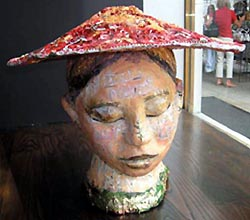MOULDS
CAN ENHANCE A MORE FREE-FLOWING creative expression of handbuilding
clay. Also they can help the artist deal better with some
of the problems of clay. One can save wasted hours. Using
a mould can speed up the entire building process. A mould
has other uses besides reproducing the same clay form over
and over again. The clay heads featured in this article were
hand pressed out of the same mould. When the clay heads are
removed from this two piece mould they are just less than
leather hard resulting in lightweight hollow forms that I
can move easily. I can still change the clay in any way that
I like. I can express many different versions from the same
form what would seem to be impossible in one sculpture.
The question of ‘who and what we are and
what is our purpose’ is a recurring theme in my work.
The oversizing of the heads compared to the normal size of
a human head is a technique that has been used down through
the different periods of art history to convey the importance
of that person or theme. In my work I have focused on human
and animal heads and use live models to examine and replicate
their form in a much larger size what they actually are. Using
photographs of the subject is also helpful. I build, carve
and model images into solid clay forms, pounding the clay
with my fist. The solid clay form gives some resistance when
I want to push in or dig or scrape out some areas. The moulds
address the logistical requirement that clay sculpture needs
to be hollow to fire properly and a mould allows you to build
without internal walls. An added plus of a hollow sculpture
is weight reduction. Before incorporating moulds into my building
process, breakage was a serious issue, which caused countless
hours of lost time.
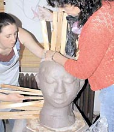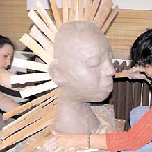
STAGE 1 – Building the solid clay
forms. The original solid sculpture can involve much clay
and many hours. Build on the ground or on a durable table
because of the amount of clay and the weight of the mould
built around it. Recycled clay is suitable for this purpose.
In the end the original can be destroyed and the clay can
be reused for another sculpture. There is an important issue
regarding mould-making that you must give consideration to
before making your pieces, that is, dealing with the undercuts
in the original sculpture. You must think of the direction
that you will attempt to pull your mould off the sculpture
and what could hinder the plaster mould being removed easily.
A mould piece should freely detach itself so plan ahead. A
Murphy’s oil soap and water mixture must be applied,
to the surfaces that will be touching the next mould piece
to prevent the plaster forms sticking together. I recommend
that you don’t make individual mould pieces heavier
than what you can handle easily.
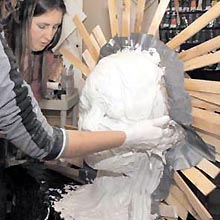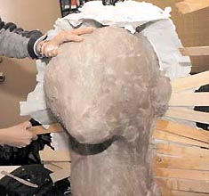
STAGE 2 – Making the two-piece
press-mould. Start by making the centre line of the solid
sculpture original from the bottom of the neck area where
it touches the table, up to each ear, and push the wooden
or other shims down into the soft clay. Going from ear to
ear by moving over the top of the head, do the same again
with more shims. You have now divided the form into two sections;
face front and back of head. The shims will keep the two sides
of the mould separate. I also apply small pieces of grey electric
tape to cover the small holes between the shims. Apply a mixture
of oil soap with water to both sides of the shims and tape.
Now you are ready to mix up a bucket of plaster. Half fill
the bucket with water, and sift or pour in a 25-pound bag
of plaster. I use an electric drill and paint mixer blade
to mix the plaster. I make the two mould pieces by applying
the plaster while the sculpture is standing on its neck. I
wait until the plaster is as thick as whipped cream and then
work quickly before it hardens too much (a second person assisting
you with this part is helpful). I wipe the outside of the
mould with a damp sponge so it will be smooth when it hardens.
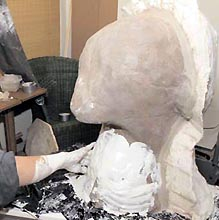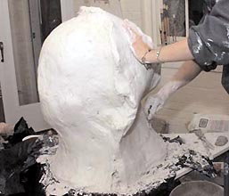
STAGE 3 – Preparing to make the
second piece of the mould once you have completed one side
of the mould. Carefully remove the shims. Before you do anything
else make sure to carve out at least two large indented negative
space triangles on either side of the mould to make some keys.
When you make the second side of the mould it will automatically
fill in the negative key spaces on the first mould. The new
positive key pieces which will fit in the key pieces when
you reassemble the mould later. Once your plaster is mixed
up and almost ready to harden, quickly make the second mould
piece by applying the plaster to the other side. If you missed
getting some spots to the desired 2.5 - 4 cm (1 1 1/2 in)
thickness then you can mix up smaller batches of plaster to
fill in and reinforce thin spots on the mould pieces. I let
both pieces harden for several hours, then I turn the whole
mould on to its side with someone helping me. When I can access
the flat bottom of the neck of the sculpture such as this
way I can scoop out all the solid clay out with a pot-tery-carving
tool or my hands. The plaster press mould will last as long
and strong as how well you make it (areas of the mould too
thin with crumble when you press clay against them but can
be reinforced with more plaster. All of my head moulds have
lasted more than three years, despite numerous usages and
some chipping on the edges.
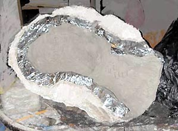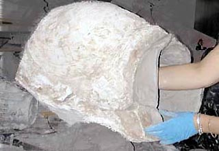
STAGE 4 – Customising the raw form.
I hand-press the clay into the moulds with them lying on their
sides looking up at me as if they were two baby cradles. I
make sure to build up the edges 5 cm (2 in) thick where the
front mould piece and back will touch each other when the
two sides of the mould are put together. I let the clay stiffen
in the moulds overnight before I try to join the two sides
together. Join the two sides of the mould together to form
a complete clay head. After you have pressed the clay into
the mould, it will be too soft and the clay will fall out
so it is advisable to let the clay stiffen in the moulds to
almost leatherhard. I want the inside parts to stiffen up
but I want the places where the clay touches to stay moist.
To achieve this I cover those areas with aluminum foil to
keep them from becoming too dry. Make sure to remove the aluminum
foil before you join the front and back pieces together. Poke
holes all around the inside of the sculpture with a fork before
you join the two sides together. How long you leave the clay
in the mould depends on how wet or dry the plaster remains.
After I make my moulds, I put them in the sun outdoors for
several days or in the winter next to warm radiators. Once
the form comes out of the mould the head sculpture should
be about leatherhard and able to stand up on its own neck.
I work freely on the leatherhard clay, making marks, adding
parts, etc. If it breaks at this stage I can go back and press
out another head form. The impression of the original sculpture
that I laboured so hard over is still there preserved, captured
into the mother mould and not lost. After the last glaze and
gold firing I spend time painting on the finishing touches
with oil or enamel paints. I prefer to have my pieces retain
an unfinished quality to them. If you paint them with too
much detail they will lose some of their visual freshness.
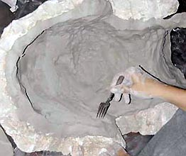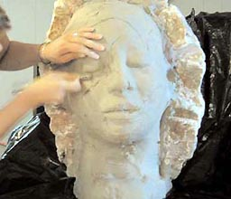
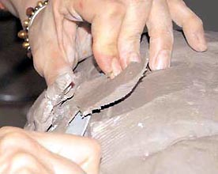
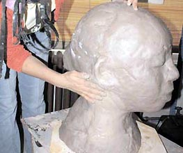
Gilda
Oliver is a ceramic artist and a teacher at Baltimore
Clayworks, Maryland. Photography by Katie Walsh. Text &
images ©.
More Articles